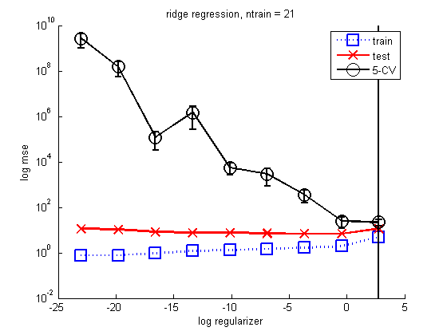
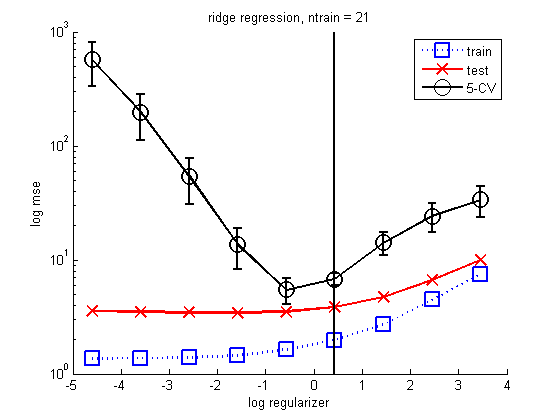

Ridge Regression with Polynomial Basis Expansion
Compare effect of regularizer strength
Contents
Make the data
ns = [21 100];
for ni=1:length(ns)
n = ns(ni); %[xtrain1d, ytrain, xtest1d, ytest] = polyDataMake('-sampling','thibaux','-n',n); xtrain = linspace(0,20,n)'; randn('state', 654321); xtest = [0:0.1:20]'; sigma2 = 4; w = [-1.5; 1/9]; fun = @(x) w(1)*x + w(2)*x.^2; ytrain = feval(fun, xtrain) + randn(size(xtrain,1),1)*sqrt(sigma2); ytestNoisefree = feval(fun, xtest); ytest = ytestNoisefree + randn(size(xtest,1),1)*sqrt(sigma2);
Basis function expansion
deg = 14; [Xtrain] = rescaleData(xtrain); Xtrain = degexpand(Xtrain, deg, false); [Xtest] = rescaleData(xtest); Xtest = degexpand(Xtest, deg, false);
Now compare CV with train/test error on a dense grid of lambdas
lambdas = logspace(-10,1.2,9); %lambdas = logspace(-5,1.2,9); NL = length(lambdas); logev = zeros(1,NL); testMse = zeros(1,NL); trainMse = zeros(1,NL); for k=1:NL lambda = lambdas(k); fitFn = @(Xtr,ytr) linregFitL2(Xtr, ytr, lambda); predFn = @(w, Xte) linregPredict(w, Xte); lossFn = @(yhat, yte) (yhat - yte).^2; [mu(k), se(k)] = cvEstimate(fitFn, predFn, lossFn, Xtrain, ytrain, 5); w = linregFitL2(Xtrain, ytrain, lambda); ypredTest = linregPredict(w, Xtest); ypredTrain = linregPredict(w, Xtrain); testMse(k) = mean((ypredTest - ytest).^2); trainMse(k) = mean((ypredTrain - ytrain).^2); end figure; hold on ndx = log(lambdas); % 1:length(lambdas); plot(ndx, trainMse, 'bs:', 'linewidth', 2, 'markersize', 12); plot(ndx, testMse, 'rx-', 'linewidth', 2, 'markersize', 12); xlabel('log regularizer') ylabel('mse') %plot(ndx, mu, 'ko-', 'linewidth', 2, 'markersize', 12); errorbar(ndx, mu, se, 'ko-','linewidth', 2, 'markersize', 12 ); legend('train', 'test', '5-CV') title(sprintf('ridge regression, ntrain = %d', n)) if n==21 set(gca,'yscale','log') %set(gca,'ylim',[0 1000]); ylabel('log mse') end % draw vertical line at best value dof = 1./(eps+lambdas); idx_opt = oneStdErrorRule(mu, se, dof); ylim = get(gca, 'ylim'); x = ndx(idx_opt); h=line([x x], ylim); set(h, 'color', 'k', 'linewidth', 2); printPmtkFigure(sprintf('linregCVPolyVsReg%d-mse', n)) 
end